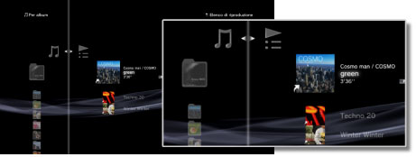
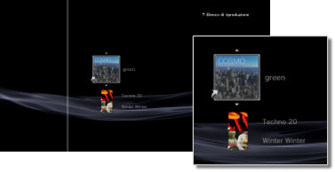

Musica > Utilizzo degli elenchi di riproduzione > Modifica degli elenchi di riproduzione
Modifica degli elenchi di riproduzione
È possibile aggiungere, eliminare o riordinare brani in un elenco di riproduzione.
Aggiunta di brani agli elenchi di riproduzione
1. |
Selezionare |
|---|---|
2. |
Selezionare l'elenco di riproduzione che si desidera modificare, quindi premere il tasto |
3. |
Selezionare [Modifica].  |
4. |
Usando i tasti direzionali, scegliere il brano che si vuole aggiungere all'elenco di riproduzione fra quelli salvati sull'hard disk. |
 (Musica) >
(Musica) >  (Elenchi di riproduzione).
(Elenchi di riproduzione). .
. per terminare le modifiche.
per terminare le modifiche.Eliminazione di brani dagli elenchi di riproduzione
1. |
Selezionare |
|---|---|
2. |
Selezionare l'elenco di riproduzione che si desidera modificare, quindi premere il tasto |
3. |
Selezionare [Modifica]. |
4. |
Selezionare il brano che si vuole eliminare dall'elenco di riproduzione, quindi premere il tasto |
 .
.Note
- Anche se un brano è stato eliminato dall'elenco di riproduzione, il file musicale non viene eliminato dal disco rigido.
- Se un brano aggiunto ad un elenco di riproduzione viene eliminato dal disco rigido, verrà automaticamente eliminato anche dall'elenco di riproduzione.
Riordino dei brani negli elenchi di riproduzione
1. |
Selezionare |
|---|---|
2. |
Selezionare l'elenco di riproduzione che si desidera modificare, quindi premere il tasto |
3. |
Selezionare [Modifica]. |
4. |
Selezionare i brani che si desidera spostare e premere quindi il tasto  |
5. |
Utilizzando i tasti |
 .
.
 spostare il brano nella posizione desiderata, quindi premere il tasto
spostare il brano nella posizione desiderata, quindi premere il tasto